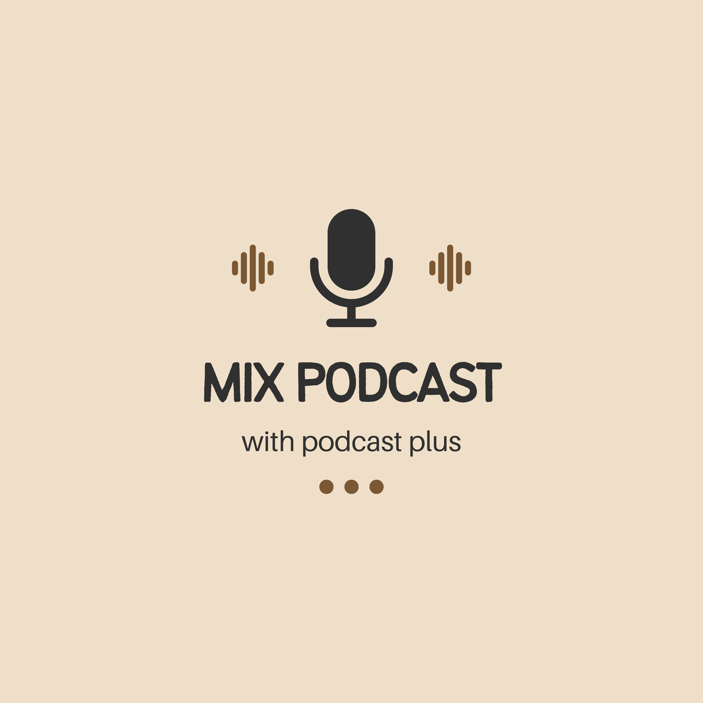
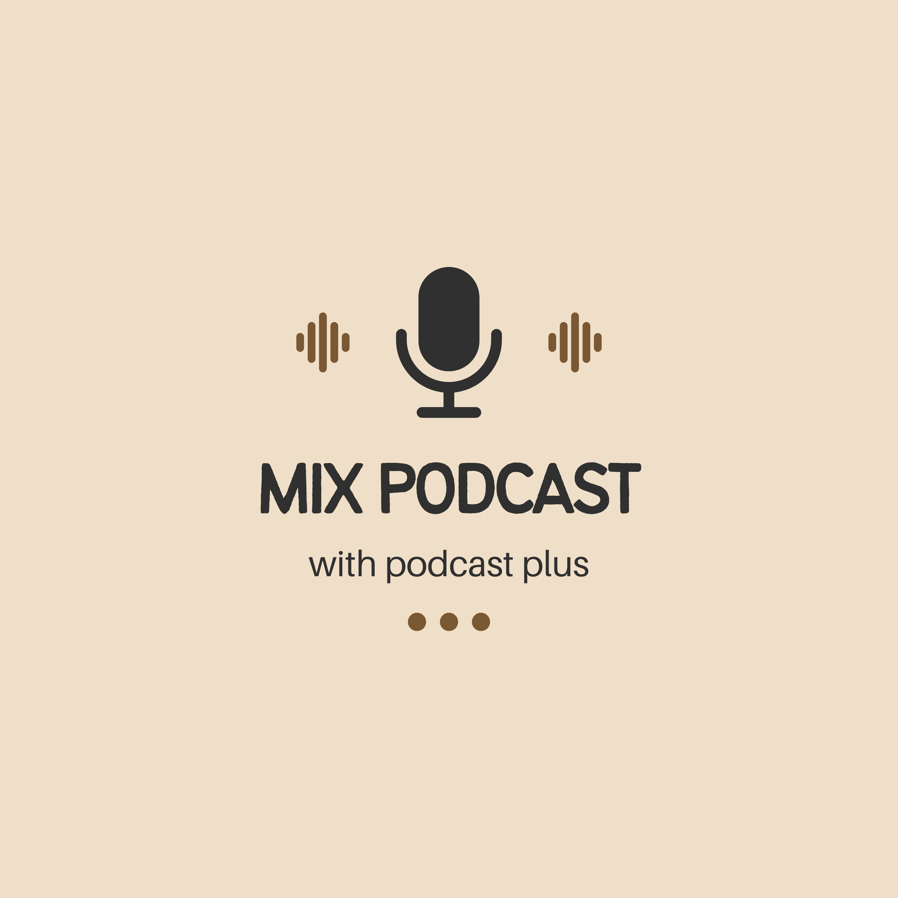
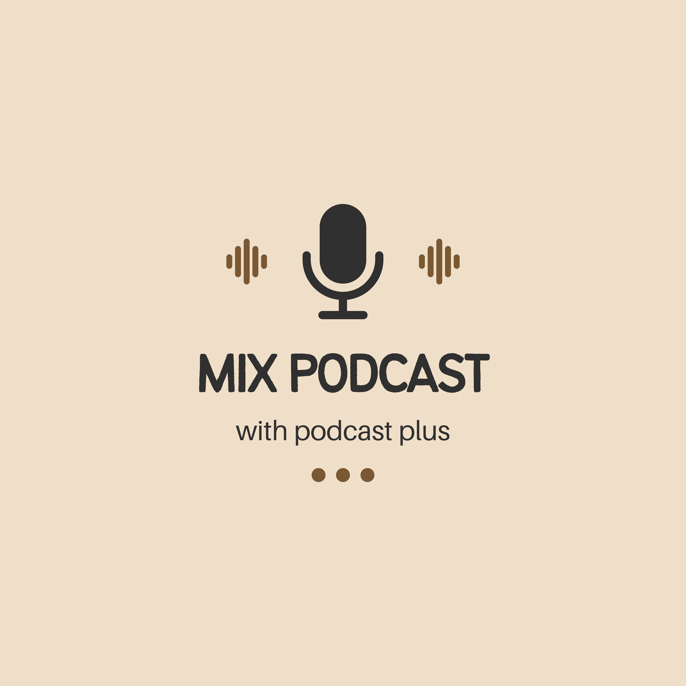

Welcome to Podcast Plus+, your ultimate destination for the exciting world of podcasts! We offer a comprehensive platform featuring a diverse range of podcasts to suit all your interests and preferences. Whether you're a fan of inspiring stories, seeking in-depth analysis on specific topics, or eager to listen to engaging conversations with prominent figures, we have everything you need to satisfy your listening passion.
